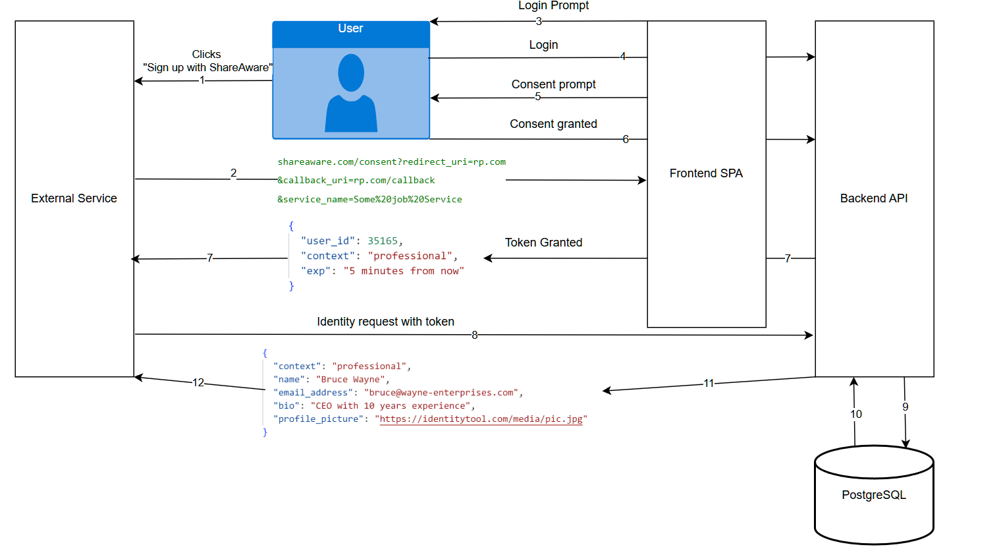

ShareAware is a privacy-first identity platform that enables users to manage multiple contextual identities and share them with third-party services using explicit, per-request consent. The system replaces implicit Single-Sign-On with short-lived, cryptographically signed tokens that minimise data exposure and provide full auditability.
Most Single-Sign-On systems treat identity as a single, static entity. In practice, users present different facets of themselves depending on context — professional, personal, or social. Existing federated identity solutions frequently expose more data than necessary and rely on implicit or persistent consent.
ShareAware addresses this gap by introducing contextual identities and a consent-driven sharing model that gives users precise control over what data is shared, with whom, and for how long.
ShareAware acts as a custom Identity Provider (IdP). Third-party services redirect users to ShareAware when identity access is requested. After authentication, users are shown a clear consent screen that displays exactly what identity data will be shared.
Upon approval, ShareAware issues a short-lived, single-use, RS256-signed JWT. This token can be redeemed by the relying party to retrieve only the permitted identity fields. All access is logged and can be reviewed or revoked by the user.
Users can create multiple identities across contexts (e.g. professional, social). Each identity contains optional fields to support data minimisation and is protected by a visibility flag to prevent accidental disclosure.
Identity data is never shared automatically. Every third-party request requires explicit user approval, with a clear breakdown of the fields being requested and the service requesting them.
Identity access is granted via RS256-signed JWTs that are short-lived, non-refreshable, and enforced as single-use. Token reuse, replay, and tampering are prevented through server-side validation and logging.
Tokens are delivered to relying parties via HTTPS POST requests rather than URL parameters, reducing the risk of leakage through logs, browser history, or referrer headers.
Every consent event generates an immutable snapshot of the shared identity data and a corresponding audit record. Users can review past access grants and revoke unused tokens at any time, ensuring transparency and control.